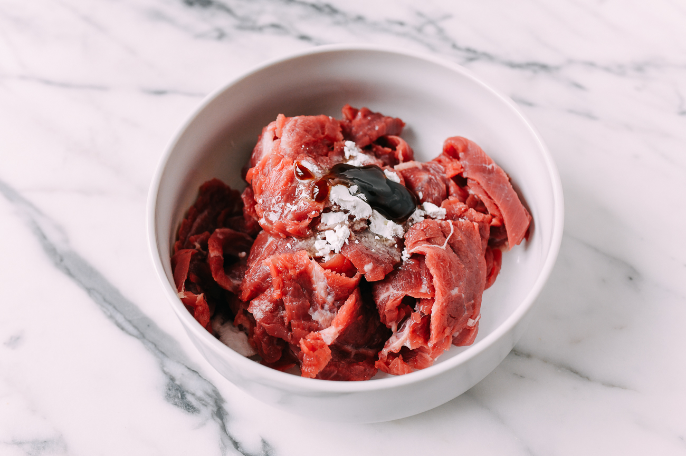
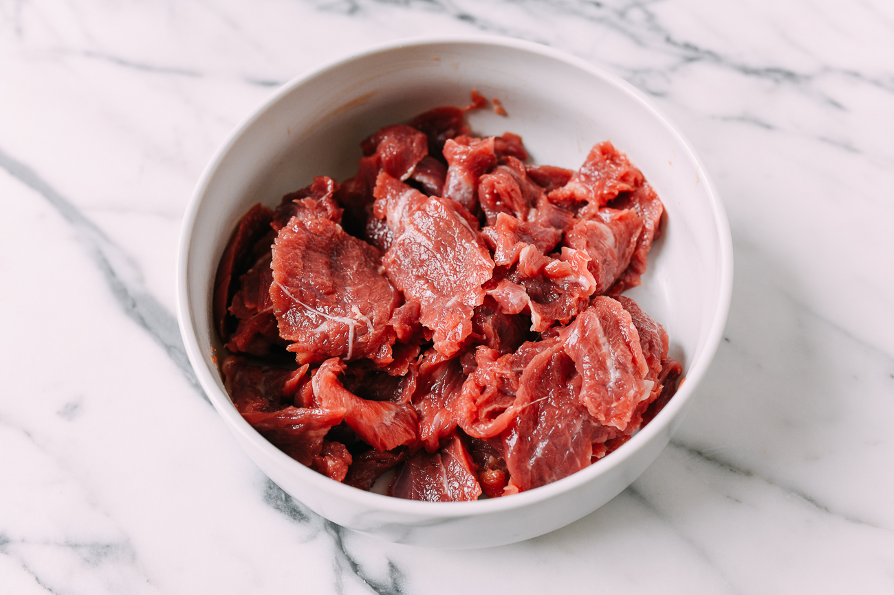
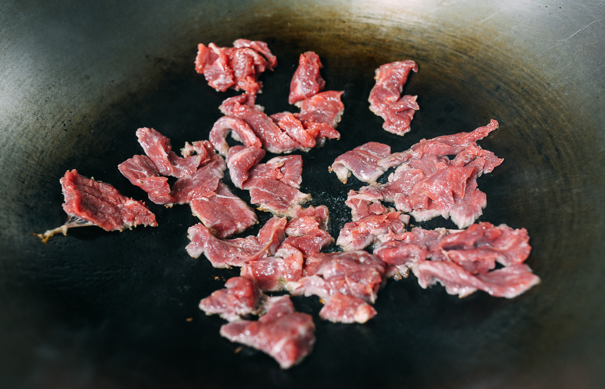
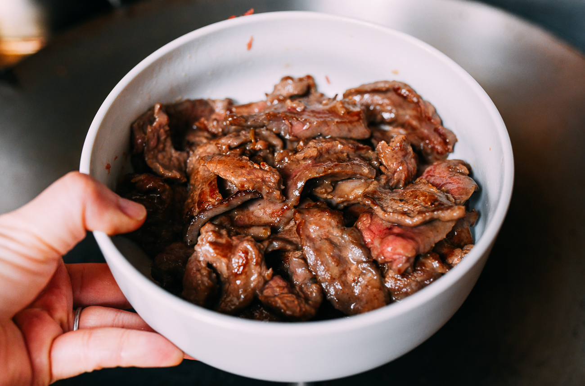
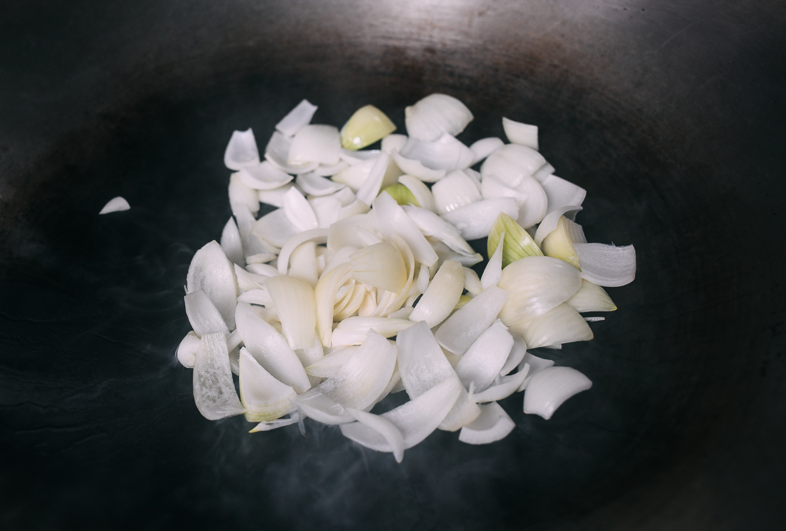
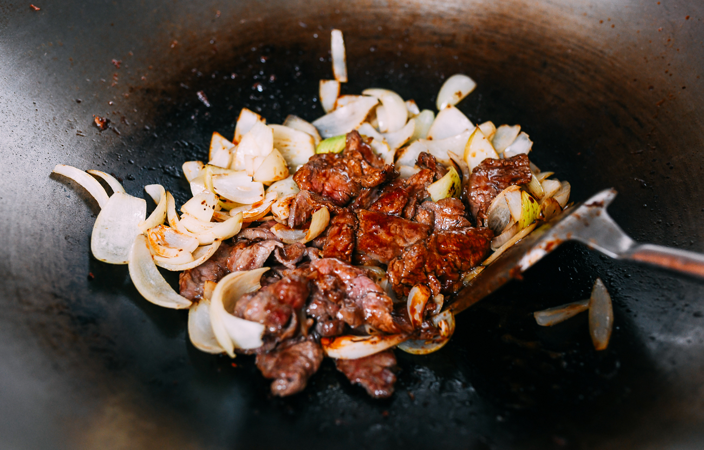
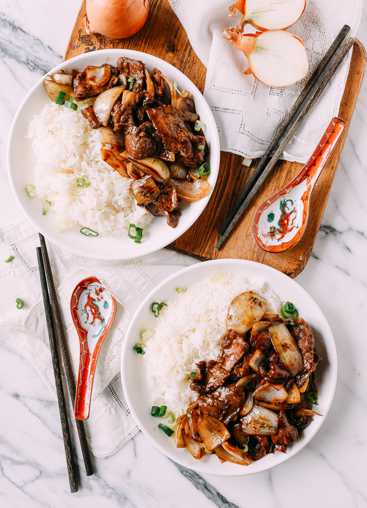

This Chinese stir-fried beef with onions gets its distinctive flavor from two types of onions—yellow onions and green onions—for a satisfying dish. This easy, saucy stir-fried beef recipe comes together quickly in a wok for a hearty weeknight family dish that is fancy enough for guests. The perfectly flavored beef and onions may be served with hot cooked rice or noodles. Add a simple Chinese cucumber salad or side vegetable for a well-rounded meal.
Calories: 268kcal (13%) Carbohydrates: 9g (3%) Protein: 26g (52%) Fat: 14g (22%) Saturated Fat: 3g (15%) Trans Fat: 1g Cholesterol: 68mg (23%) Sodium: 613mg (26%) Potassium: 513mg (15%) Fiber: 1g (4%) Sugar: 4g (4%) Vitamin A: 14IU Vitamin C: 5mg (6%) Calcium: 44mg (4%) Iron: 2mg (11%)
In a medium bowl, add the flank steak, baking soda, cornstarch, oil, oyster sauce, and water. Mix until the liquid has been absorbed, and set aside to marinate for at least 15 minutes, or up to 30 minutes.
 Meanwhile, in a small bowl, combine the light soy sauce, dark soy sauce, ketchup, oyster sauce, sugar, sesame oil, and water. Set aside.
Heat a wok over high heat until smoking. Add 1 tablespoon of oil, and spread the beef in the wok in a single layer. Sear the meat, undisturbed, for 30 seconds to 1 minute, until browned.
Stir-fry for an additional 15-30 seconds, until about 75% cooked. Remove from the wok and set aside.
Add another tablespoon of oil to the wok, along with the onions.
Stir-fry until onions are seared and slightly blistered, 60-90 seconds. Remove from the wok.
Add the prepared sauce to the wok, and bring to a simmer. Simmer for 15 seconds, and then stir in the beef and onions for another 30 seconds.
Serve over rice
